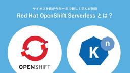
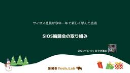
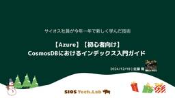
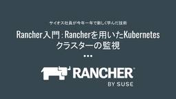
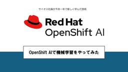
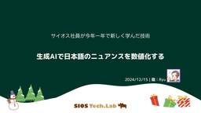
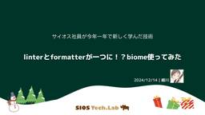

SIOS Tech. Lab
https://tech-lab.sios.jp
サイオステクノロジーのエンジニアが クラウド、OSS、認証に関する様々な情報を提供します。
フィード

Red Hat OpenShift Serverlessとは？
SIOS Tech. Lab
サーバーレスアーキテクチャを採用することで、開発者はトラフィックやスケーリングなどのインフラストラクチャに関する作業を気にすることなく、コスト削減やパフォーマンス向上を実現し、アプリケーション開発に集中することが可能です ...Red Hat OpenShift Serverlessとは？ first appeared on SIOS Tech. Lab.
1時間前

SIOS輪読会の取り組み
SIOS Tech. Lab
PS/SLの佐々木です。 アドベントカレンダー19日目です。 今回は２年ほど続けてきた輪読会の取り組みについて紹介します。 輪読会の目的 輪読会の開催目的には以下のようなものがあります。 エンジニアの基礎レベルの底上げ ...SIOS輪読会の取り組み first appeared on SIOS Tech. Lab.
1日前

【2024年12月】OSSサポートエンジニアが気になった！OSS最新ニュース
SIOS Tech. Lab
こんにちは！ 今月も「OSSのサポートエンジニアが気になった！OSSの最新ニュース」をお届けします。 FINOS が Linux Foundation Research と協力して、業界の最新動向を調査したレポート「金融 ...【2024年12月】OSSサポートエンジニアが気になった！OSS最新ニュース first appeared on SIOS Tech. Lab.
2日前

知っておくとちょっと便利！パッケージマネージャについて4 ～Debian 系システム編・続き～
SIOS Tech. Lab
今号は、前号の「パッケージマネージャについて」の続きになります！ 今回は Debian 系システムの apt で、以前紹介できなかったサブコマンドについてご紹介します。 apt の便利なサブコマンド パッケージの情報を表 ...知っておくとちょっと便利！パッケージマネージャについて4 ～Debian 系システム編・続き～ first appeared on SIOS Tech. Lab.
2日前

【Azure】CosmosDBにおけるインデックス入門ガイド【初心者向け】
SIOS Tech. Lab
こんにちは、サイオステクノロジーの佐藤 陽です。 今回ははCosmosDBのインデックス機能についてご紹介したいと思います。 RDBにおいても登場するインデックスですが、CosmosDBにおいても重要な概念 ...【Azure】CosmosDBにおけるインデックス入門ガイド【初心者向け】 first appeared on SIOS Tech. Lab.
2日前

Rancher入門：Rancherを用いたKubernetesクラスターの監視
SIOS Tech. Lab
はじめに サイオステクノロジーの塚田です。Rancher入門ブログシリーズとして、前回はRancherを使って複数のクラスターを管理する方法について解説しました。本記事では、Rancherを用いてKubernetesクラ ...Rancher入門：Rancherを用いたKubernetesクラスターの監視 first appeared on SIOS Tech. Lab.
3日前

OpenShift AIで機械学習をやってみた
SIOS Tech. Lab
はじめに こんにちはサイオステクノロジーの小野です。私は今年入社したばかりの新卒社員なので今年一年は新しいことしか学んできませんでした。その学んできた中でもOpenShift AIは一番インフラエンジニアとして学びになっ ...OpenShift AIで機械学習をやってみた first appeared on SIOS Tech. Lab.
4日前

ChatGPTでニュアンスを数値化する
SIOS Tech. Lab
挨拶 ども！すごく良い調子で弊社開催の「#2024アドベントカレンダー」が進んでいます。内容としても様々な内容が投稿されていて、弊社の特徴が出ていて素晴らしいですね。 今期は、【Streamlit】【Qumcum】【AI ...ChatGPTでニュアンスを数値化する first appeared on SIOS Tech. Lab.
5日前

linterとformatterが一つに！？Biome使ってみた
SIOS Tech. Lab
はじめに 皆さんこんにちは。エンジニアの細川です。 今回はアドベントカレンダーで記事を書いてみたいと思います！ テーマは「サイオス社員が今年一年で新たに学んだ技術」です！ 今回はTypeScript界隈で注目されている！ ...linterとformatterが一つに！？Biome使ってみた first appeared on SIOS Tech. Lab.
6日前
2024年OCS福岡_生成AIに関するセミナー登壇の感想
SIOS Tech. Lab
こんにちはアプリチームの織田です 先日、12月7日に開催されたOSC福岡で、初めてセミナーに登壇するという貴重な経験をしてきました。今回の私の発表テーマは「生成AI」です。生成AIの基礎知識を中心に、これからこの分野に ...2024年OCS福岡_生成AIに関するセミナー登壇の感想 first appeared on SIOS Tech. Lab.
7日前